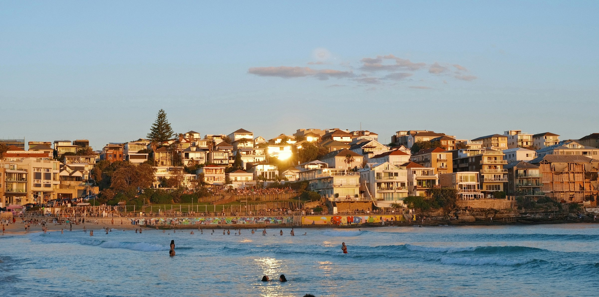

A. Overwing Placeholder
Lowercase wordmark in the display face. One letter o becomes a cabin window with its blind half down. The window alone is the small glyph for chips, the app tile and the loading state.
For Varun at checkpoint 2a. Read design/concepts.md first: it holds the three concepts, the section-by-section plan and the conflicts to rule on.
Everything here is working material. The names and wordmarks are placeholders, not the client's brand. The headline and subline are working copy, not final copy. The photos are Unsplash stock, approved as stand-ins until client or licensed media arrives. No client fact appears on this page.
Best read on a desktop screen. On a phone the sketches scale down as pictures; the 390 designs come in phase B.
One per concept. Each is a direction for a temporary wordmark, drawn only far enough to judge. None was checked for trademarks, and each is replaced the day the client supplies a brand.
Lowercase wordmark in the display face. One letter o becomes a cabin window with its blind half down. The window alone is the small glyph for chips, the app tile and the loading state.
The word sits on a small ticket with one perforation and two notches cut from its edge. The notched stub alone is the glyph. Nothing else is skeuomorphic: no barcodes, no stamps.
Wide capitals with one horizon rule under the word that runs past it and turns gold where the land would be. The rule is the glyph, and reappears as the route line on itineraries.
Same working headline, subline and search in each, set at the size the hero would use at 1440. The search is Hipcamp's pill with The Hoxton's small field labels added (see conflict 6 in concepts.md). Only free fonts can ship, so T1 is shown from the deconstruction capture for comparison.
Search flights and hotels and see the total before you pay
Search flights and hotels and see the total before you pay
The client has no logo, so no palette can come from a logo yet (conflict 1). Each palette below is sampled from the pixels of its concept's hero photo and shown on that photo, inside a sketch of the concept's hero at 1440 by 900. Roles follow your colour move: one accent for highlights only, a deep colour for every call to action on light grounds, a near-black for text, white, and a warm light ground. Any palette can go with any concept.
Search flights and hotels and see the total before you pay
Card payments are handled by Stripe
#278B9BSampled: most saturated sky. Focus ring, selected states, tags.#A9D3DADerived: accent lightened. Labels and focus on deep grounds.#1F3B41Derived: wing slate #304F54 (sampled) darkened. Every call to action.#121D20Derived: same hue, near-black. Body and headline text.#5B6567Sampled: wing #5D6769, nudged. Secondary text, icons.#EED7D5Sampled: blush cloud. The warm cream role, window bezels.#F4E9E7Derived: blush lightened. Hipcamp's one interactive surface role.#FBF8F7Derived. Page ground; white for cards and the pill.On the frame: no text sits on the photo in this concept, so every reading is a flat token pair above. The view inside the windows carries no copy. In motion, the blinds rise once on load (1.6s ease-out, 120ms apart) and stay still under reduced motion.
Search flights and hotels and see the total before you pay
#9A7635Sampled: the walker's dress. Focus ring, selected states, tags.#D8BA75Sampled: sunlit wall. Labels and focus on deep grounds.#2C2F1ADerived: cobble shadow #252818 (sampled) lifted. Every call to action.#18190EDerived: same hue, near-black. Text.#5F5530Sampled: shaded wall #5E5325. Secondary text, icons.#ECE6D3Derived: wall light #D6CCA4 (sampled) lifted. Interactive surface.#F6F4EADerived: sky #EDF1E1 (sampled) warmed. Page ground.#FFFFFFThe ticket and every card.On the frame: no text sits on the photo; the photo panel on the ticket is image only. Note: this palette lands close to Hipcamp's own olive and warm grey, even though it comes from a different photo. If you pick it, I would push the deep colour away from olive so it does not read as the reference's palette.

Search flights and hotels and see the total before you pay
Card payments are handled by Stripe
#9B6438Sampled: terracotta roofs. Focus ring, selected states, tags.#E0B378Sampled: sunlit facades. Labels and focus on deep grounds and photos.#1D3A4EDerived: sea #4B748D (sampled) darkened. Every call to action, scrim tint.#0F1D27Derived: same hue, near-black. Text.#4E6070Derived from the sea. Secondary text, icons.#E6EEF2Derived: sky #9FC1D8 (sampled) lifted. Interactive surface.#FAF5EEDerived from the facades. The warm cream ground.#FFFFFFThe app world that rises over the photo.On the frame: white headline and subline sit on the photo under a radial scrim in the ink colour (58% at the centre, 40% at mid radius, clear at the edge) plus a light top fade for the account pills. I hid the text, captured the frame at 1440 and read every pixel behind each line. Headline: worst pixel 3.6:1, median 5.0 to 5.4:1 (large text needs 3:1). Subline: worst pixel 4.9:1, median 5.7:1 (needs 4.5:1). Hotels label on the dark frosted toggle: 5.7:1. Log in on its frosted pill: 9.5:1. The first scrim I tried (48% centre) failed: headline 2.8:1 and subline 3.8:1 at the worst pixel. Only one crop was checked; the build must recheck at 390 and on tall screens, where the photo crops differently.
All three are free photos under the Unsplash License (checked on each photo page on 2026-11-10; none is Unsplash+). They are stand-ins for client or licensed media.